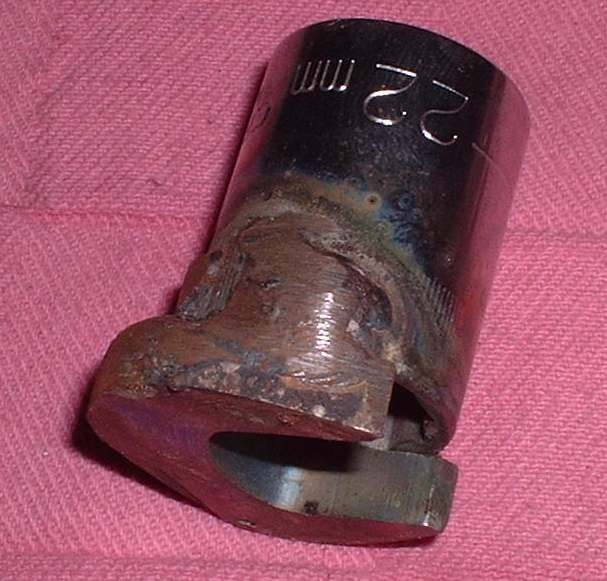
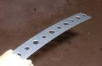
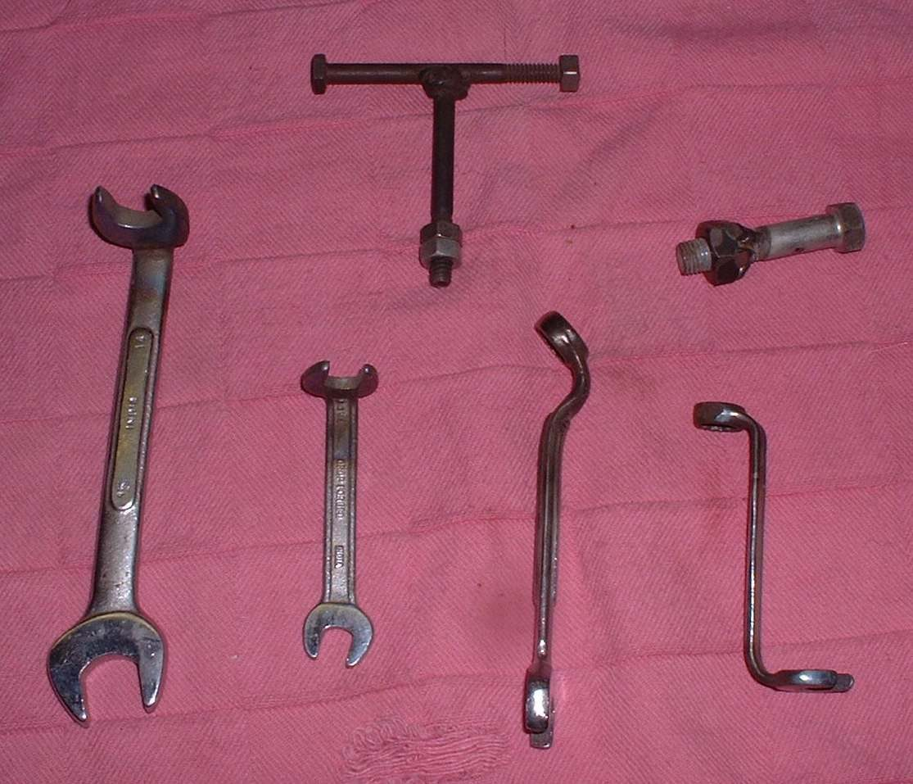
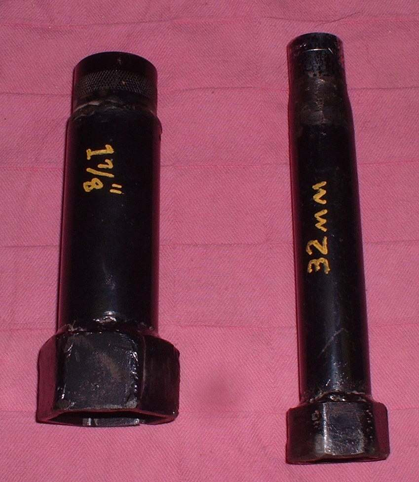
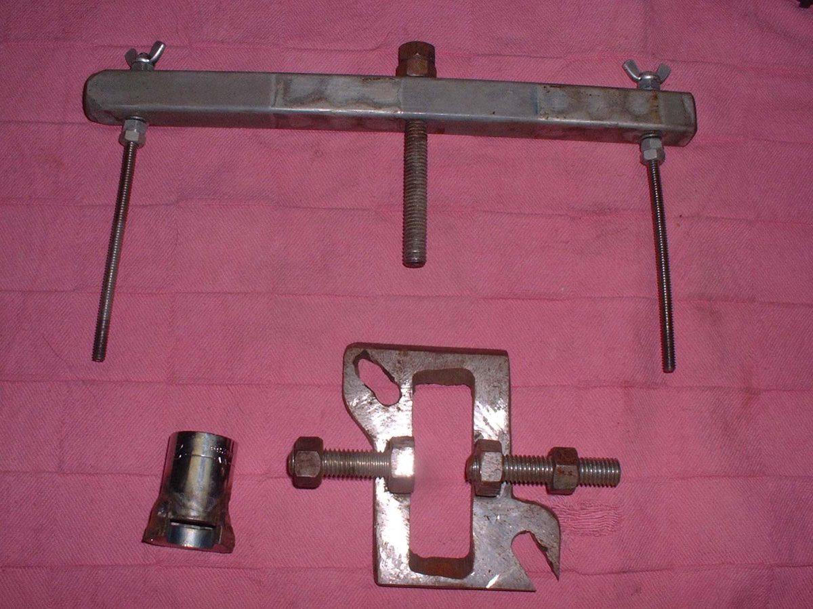
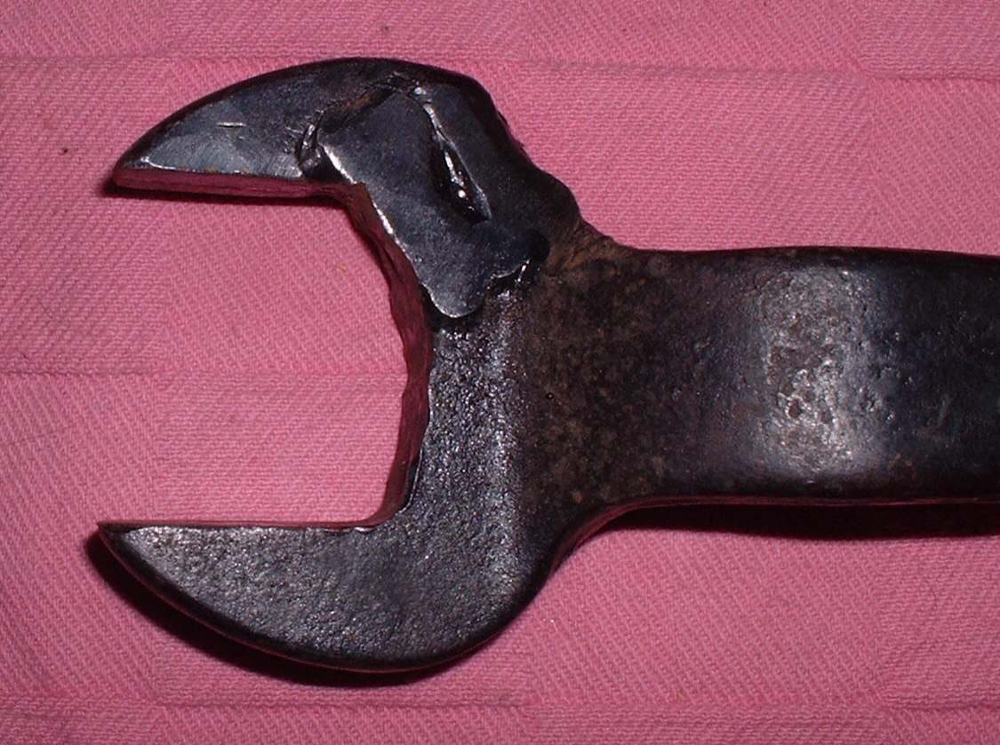

When a special tool is too costly or cannot be found, a workable copy can often be made from a spanner, a socket, steel strap and a few bolts. Make a tool only when you understand what force it must carry and where it will grip.
Safety
- Wear eye protection and gloves for cutting, grinding and welding. Wear a welding mask if welding.
- Heat a spanner only in a clear area, away from fuel. Let it cool before handling.
- Test the tool on a spare part or at low force first. A weak weld or thin strap can snap and hit you.
- Do not make tools for brake, steering or wheel-retention jobs.
You need
- Scrap spanners, old sockets, steel strap or flat bar, nuts, bolts, washers, wire.
- A hacksaw, file, drill, vice and a welder if you have one. A gas torch works for bending.
- The part to be turned, held or pulled, and a measuring tool.
Steps
- Study the part: where is the grip (flats, slots, holes), how far must the tool reach, and which way does it turn?
- Choose the tool type: - Bent spanner. Heat a combination spanner in a torch until it glows dull red, bend it to reach round an obstruction, let it cool. - Cut-down spanner. Cut one side of a thick open-end spanner to fit a large nut that sits near a wall. Weld a plate in if the strength is needed. - Large socket. Measure across the nut. Cut six pieces of steel strap to fit the six flats, wrap them in wire, weld them together, then weld on an old socket so a ratchet fits. Weld a pipe in between for a deep socket. - Slotted-nut tool. For a wheel nut with slots, weld pieces of strap into prongs to fit the slots, then weld an old nut on to take a spanner. - Internal puller for a delicate part. Use two bolts with half-washers welded on as hooks, spread by a wooden dowel, held with wire, and pulled with a strap and slide hammer.
- Mark, cut and test-fit each piece before welding. The fit matters more than the finish.
- Weld or bolt together. Let it cool. File off rough edges.
- Test fit on the part, without force. Then use it with firm, even force. Stop if it bends or slips.
- Keep the tool and mark which part it fits.
Check your work
- The tool holds the part securely and the work is done without damage.
- The tool is unbent and the welds are sound.
If it did not fix the problem
- The part moves only a little or the tool slips: stop, re-read the manual steps, and consider Buy, borrow or make a special tool.